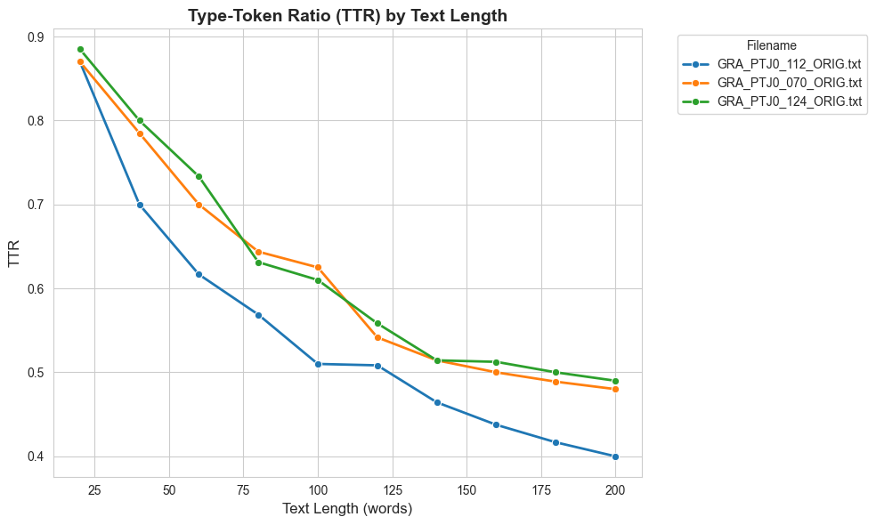
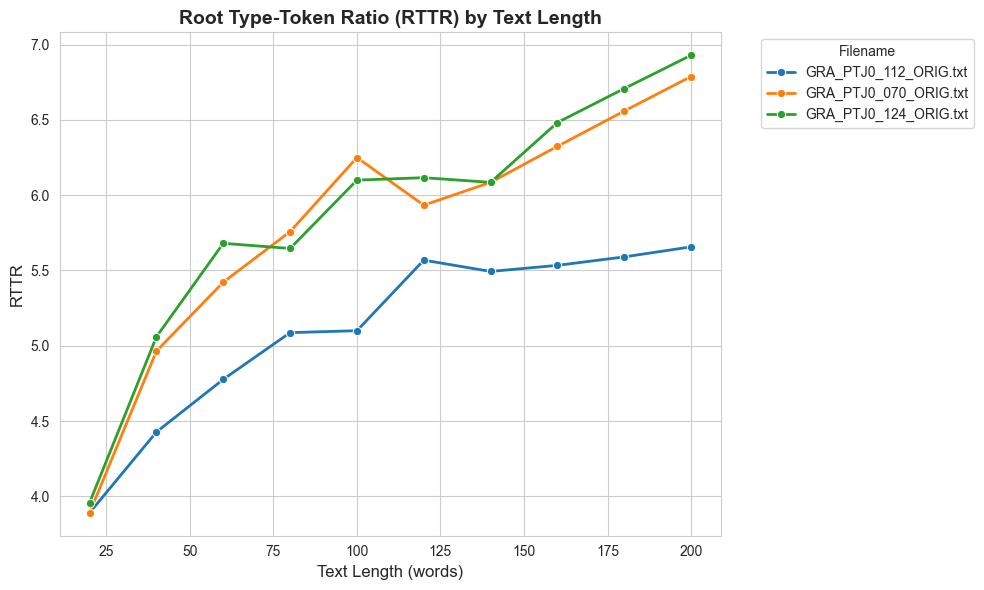
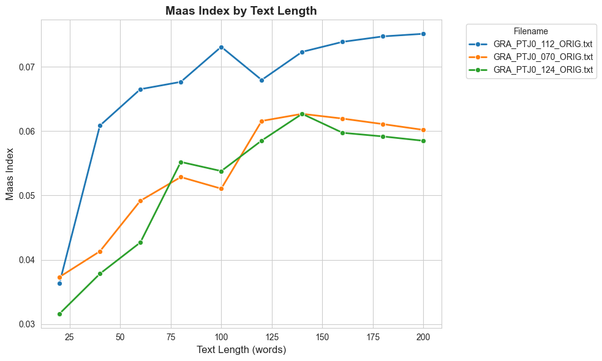
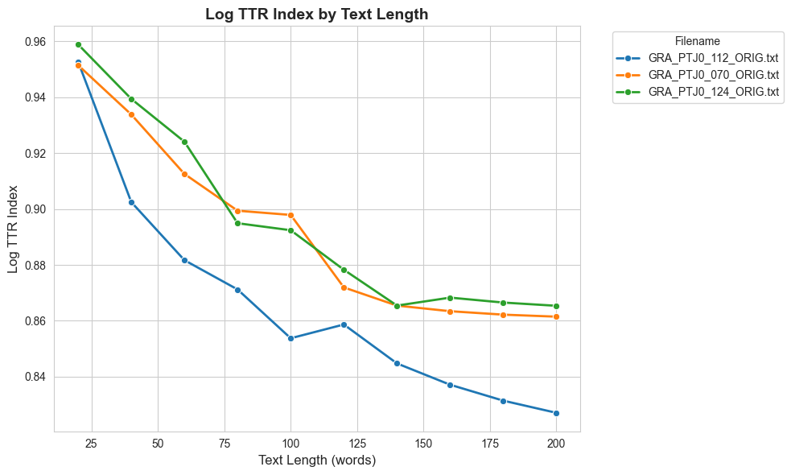
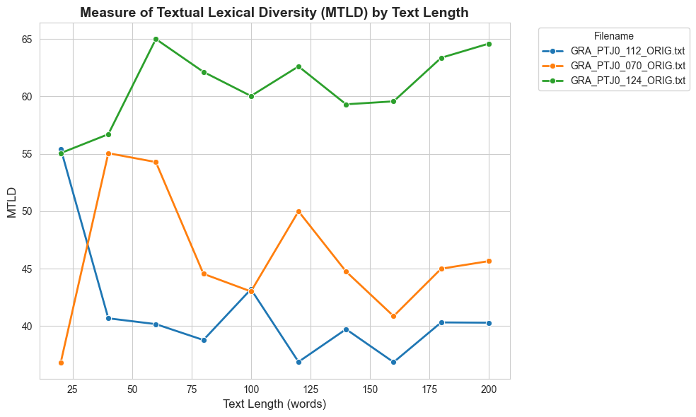
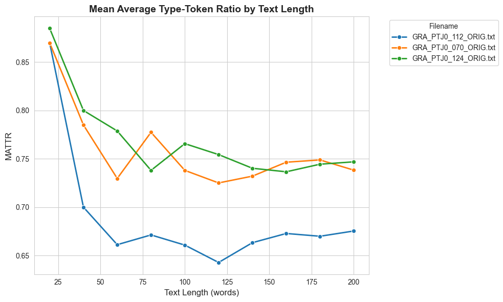

Show code
from taaled import ld
from pylats import lats
#for creating an output filename
from datetime import datetime
from datetime import date
#for finding a list of texts
import globMasaki EGUCHI, Ph.D.
July 27, 2025
The following tutorial is taken from TAALED repository
Please refer to the tutorial there for more information.
['../../../corpus_data/sample_for_ld_demo/GRA_PTJ0_112_ORIG.txt',
'../../../corpus_data/sample_for_ld_demo/GRA_PTJ0_070_ORIG.txt',
'../../../corpus_data/sample_for_ld_demo/GRA_PTJ0_124_ORIG.txt']def outname_creator(fldname,isprll,other = None):
day = date.today().strftime("%Y%m%d") #get date
time = datetime.now().strftime("%H%M%S")
ldv = "taaledv" + ld.version
# latsv = "pylatsv" + lats.version
if isprll == True: # we are going to think about only the "nopa" option in this tutorial.
pa = "pa"
else:
pa = "nopa"
if other == None:
outn = "_".join([day,time,fldname,pa]) + ".txt"
else:
outn = "_".join([day,time,fldname,pa,other]) + ".txt"
return(outn)
outname = outname_creator("sample",False) 1 of 3 ../../../corpus_data/sample_for_ld_demo/GRA_PTJ0_112_ORIG.txt
Please define a parameters class (e.g., params = lats.ld_params_en). Stopping program.
3 files considered
0 files skipped due to length issues:
[]
0 files successfully processed by TAALED1 of 3 ../../../corpus_data/sample_for_ld_demo/GRA_PTJ0_112_ORIG.txt
2 of 3 ../../../corpus_data/sample_for_ld_demo/GRA_PTJ0_070_ORIG.txt
3 of 3 ../../../corpus_data/sample_for_ld_demo/GRA_PTJ0_124_ORIG.txt
3 files considered
0 files skipped due to length issues:
[]
3 files successfully processed by TAALEDimport pandas as pd
import seaborn as sns
import matplotlib.pyplot as plt
# Load the parallel analysis data into a DataFrame
df = pd.read_csv("20250727_134615_sample_nopa.txt", sep='\t')
# Display basic info about the DataFrame
print("DataFrame shape:", df.shape)
print("\nColumn names:", df.columns.tolist())
print("\nFirst few rows:")
print(df.head())
print("\nUnique filenames:", df['filename'].unique())DataFrame shape: (30, 15)
Column names: ['filename', 'length', 'ntokens', 'ntypes', 'mtld', 'mtld92', 'mtldo', 'mattr', 'mattr11', 'ttr', 'rttr', 'lttr', 'maas', 'msttr', 'hdd']
First few rows:
filename length ntokens ntypes mtld mtld92 \
0 GRA_PTJ0_112_ORIG.txt 20 20 17.4 55.440000 15.982000
1 GRA_PTJ0_112_ORIG.txt 40 40 28.0 36.717737 14.683333
2 GRA_PTJ0_112_ORIG.txt 60 60 37.0 47.302778 15.595000
3 GRA_PTJ0_112_ORIG.txt 80 80 45.5 38.655250 16.159091
4 GRA_PTJ0_112_ORIG.txt 100 100 51.0 42.347917 19.952381
mtldo mattr mattr11 ttr rttr lttr maas \
0 55.440000 0.870000 0.949091 0.870000 3.890758 0.952698 0.036358
1 40.681200 0.700000 0.955152 0.700000 4.427189 0.902472 0.060877
2 40.174376 0.661212 0.953333 0.616667 4.776679 0.881690 0.066535
3 38.790414 0.671290 0.950000 0.568750 5.087055 0.871207 0.067676
4 43.210139 0.660784 0.956566 0.510000 5.100000 0.853743 0.073128
msttr hdd
0 0.870000 0.000000
1 0.700000 0.000000
2 0.613333 0.690449
3 0.670000 0.706104
4 0.675000 0.693756
Unique filenames: ['GRA_PTJ0_112_ORIG.txt' 'GRA_PTJ0_070_ORIG.txt' 'GRA_PTJ0_124_ORIG.txt']# Set up the plotting style
sns.set_style("whitegrid")
plt.rcParams['figure.figsize'] = (10, 6)
# Create four separate plots for each lexical diversity metric
# 1. TTR (Type-Token Ratio) Plot
plt.figure(figsize=(10, 6))
sns.lineplot(data=df, x='length', y='ttr', hue='filename', marker='o', linewidth=2, markersize=6)
plt.title('Type-Token Ratio (TTR) by Text Length', fontsize=14, fontweight='bold')
plt.xlabel('Text Length (words)', fontsize=12)
plt.ylabel('TTR', fontsize=12)
plt.legend(title='Filename', bbox_to_anchor=(1.05, 1), loc='upper left')
plt.tight_layout()
plt.show()
# 2. RTTR (Root Type-Token Ratio) Plot
plt.figure(figsize=(10, 6))
sns.lineplot(data=df, x='length', y='rttr', hue='filename', marker='o', linewidth=2, markersize=6)
plt.title('Root Type-Token Ratio (RTTR) by Text Length', fontsize=14, fontweight='bold')
plt.xlabel('Text Length (words)', fontsize=12)
plt.ylabel('RTTR', fontsize=12)
plt.legend(title='Filename', bbox_to_anchor=(1.05, 1), loc='upper left')
plt.tight_layout()
plt.show()
# 3. Maas Index Plot
plt.figure(figsize=(10, 6))
sns.lineplot(data=df, x='length', y='maas', hue='filename', marker='o', linewidth=2, markersize=6)
plt.title('Maas Index by Text Length', fontsize=14, fontweight='bold')
plt.xlabel('Text Length (words)', fontsize=12)
plt.ylabel('Maas Index', fontsize=12)
plt.legend(title='Filename', bbox_to_anchor=(1.05, 1), loc='upper left')
plt.tight_layout()
plt.show()
# 4. Log TTR Index Plot
plt.figure(figsize=(10, 6))
sns.lineplot(data=df, x='length', y='lttr', hue='filename', marker='o', linewidth=2, markersize=6)
plt.title('Log TTR Index by Text Length', fontsize=14, fontweight='bold')
plt.xlabel('Text Length (words)', fontsize=12)
plt.ylabel('Log TTR Index', fontsize=12)
plt.legend(title='Filename', bbox_to_anchor=(1.05, 1), loc='upper left')
plt.tight_layout()
plt.show()
# 5. MTLD (Measure of Textual Lexical Diversity) Plot
plt.figure(figsize=(10, 6))
sns.lineplot(data=df, x='length', y='mtldo', hue='filename', marker='o', linewidth=2, markersize=6)
plt.title('Measure of Textual Lexical Diversity (MTLD) by Text Length', fontsize=14, fontweight='bold')
plt.xlabel('Text Length (words)', fontsize=12)
plt.ylabel('MTLD', fontsize=12)
plt.legend(title='Filename', bbox_to_anchor=(1.05, 1), loc='upper left')
plt.tight_layout()
plt.show()
# 6. MTLD (Measure of Textual Lexical Diversity) Plot
plt.figure(figsize=(10, 6))
sns.lineplot(data=df, x='length', y='mattr', hue='filename', marker='o', linewidth=2, markersize=6)
plt.title('Mean Average Type-Token Ratio by Text Length', fontsize=14, fontweight='bold')
plt.xlabel('Text Length (words)', fontsize=12)
plt.ylabel('MATTR', fontsize=12)
plt.legend(title='Filename', bbox_to_anchor=(1.05, 1), loc='upper left')
plt.tight_layout()
plt.show()





# Summary statistics for each metric by filename
print("\n" + "="*60)
print("SUMMARY STATISTICS BY FILENAME")
print("="*60)
metrics = ['ttr', 'rttr', 'maas', 'mtld']
for metric in metrics:
print(f"\n{metric.upper()} Summary:")
print(df.groupby('filename')[metric].agg(['mean', 'std', 'min', 'max']).round(4))
============================================================
SUMMARY STATISTICS BY FILENAME
============================================================
TTR Summary:
mean std min max
filename
GRA_PTJ0_070_ORIG.txt 0.5825 0.1273 0.448 0.8750
GRA_PTJ0_112_ORIG.txt 0.5095 0.1395 0.368 0.8708
GRA_PTJ0_124_ORIG.txt 0.5968 0.1314 0.476 0.8958
RTTR Summary:
mean std min max
filename
GRA_PTJ0_070_ORIG.txt 6.0991 0.8230 3.9131 7.1005
GRA_PTJ0_112_ORIG.txt 5.2486 0.4906 3.8945 5.8186
GRA_PTJ0_124_ORIG.txt 6.2516 0.8723 4.0063 7.5262
MAAS Summary:
mean std min max
filename
GRA_PTJ0_070_ORIG.txt 0.0550 0.0082 0.0353 0.0630
GRA_PTJ0_112_ORIG.txt 0.0692 0.0101 0.0364 0.0781
GRA_PTJ0_124_ORIG.txt 0.0522 0.0100 0.0285 0.0627
MTLD Summary:
mean std min max
filename
GRA_PTJ0_070_ORIG.txt 50.9351 10.4496 39.9083 78.8492
GRA_PTJ0_112_ORIG.txt 41.9704 4.3081 36.3750 53.0657
GRA_PTJ0_124_ORIG.txt 65.3780 4.3214 59.2700 73.0065